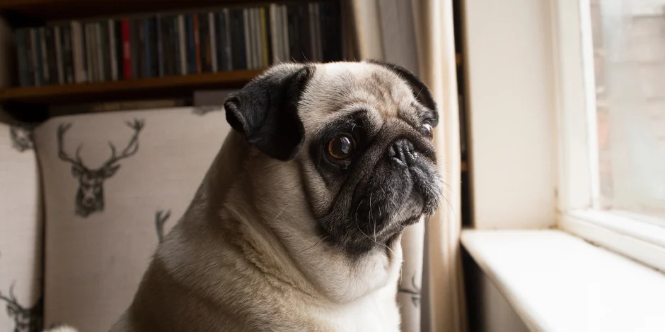

La ansiedad en tu perro puede provocarse por no poder salir, correr y jugar como siempre. Así que es importante cuidar de tu mascota y notar cualquier cambio que presente, como por ejemplo falta de apetito, variaciones en su energía y entusiasmo e incluso alteraciones en sus niveles de nerviosismo e inquietud.
Procura mantenerlo activo y ocupado en casa, busca momentos para jugar con él y llama su atención mediante cariños y actividades juntos. Eso ayudará a que su mente esté ocupada contigo, en caso de notar que tu perro respira agitadamente, se esconde o incluso baja su cola, trata de tranquilizarlo con cariños y ánimos. Incluso escuchar música relajante juntos, puede ayudar de gran manera, también prueba ponerle música clásica, eso también lo tranquilizará. Descubre cómo con la siguiente nota: Música relajante para perros ansiosos.
En caso de que los cambios en el comportamiento de tu mascota se mantengan, nuestra recomendación siempre será que consultes con un veterinario para recibir asesoría e información adecuada. Es por ello que mientras estés en casa, ponemos a tu disposición nuestra red de veterinarios con los que podrás realizar consultas online o visitas a domicilio En Club Peludos® creemos que cuando las mascotas y las personas se unen la vida es mejor, y si tienen oportunidad de pasar más tiempo juntos, estamos seguros de que encontrarán el lado positivo y se convertirán en la mejor compañía. La nueva normalidad no sólo te incluye a ti, esto también afecta a tu perro y aunque seguro está feliz de que estés más tiempo con él, también puede hacerlo un perro muy ansioso al no poder salir como antes lo hacía, pero no te preocupes pues esto puede controlarse si tomas en cuenta los siguientes aspectos. Cuidar a una mascota no debe ser complicado, siempre y cuando se tomen en cuenta las necesidades y las atenciones adecuadas. Por eso en Club Peludos® queremos acompañarte en todo este proceso brindándote la mejor información para el cuidado de tu perro o gato. Te invitamos a seguir descubriendo más contenido sobre las mascotas, claro, no sin antes acercarte a tu pequeño amigo y brindarle un poco de cariño.